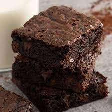

Lentil & sweet potato curry

Description
Delicious vegan pumpkin brownie.
Ingredients
- ¾ cup pumpkin puree
- 1 ½ tablespoons coconut oil
- 3 tablespoons orange juice
- 1 pinch ground nutmeg
- 1 pinch ground cinnamon
- 5 tablespoons hot water
- 3 tablespoons flaxseed meal
- 1 cup almond flour/li>
- 6 tablespoons white sugar
- 3 tablespoons orange juice
- 1 ½ tablespoons coconut oil
- 1 tablespoon vanilla extract
- ⅔ cup dark chocolate, melted
- ⅓ cup chopped pecans
- 1 teaspoon baking powder
- 1 pinch salt
- 1 pinch ground black pepper
Steps
- Preheat the oven to 350 degrees F (175 degrees C).
Grease a 9-inch square baking pan.
- Blend pumpkin puree, 1 1/2 tablespoons coconut oil,
3 tablespoons orange juice, nutmeg, and cinnamon together
in a bowl. Refrigerate pumpkin swirl until needed.
- Combine hot water and flaxseed meal in a small bowl.
Stir and let soak for about 5 minutes.
- Combine flaxseed mixture, almond flour, sugar, 3
tablespoons orange juice, 1 1/2 tablespoons coconut oil,
and vanilla extract in a blender and process. Transfer to
a bowl. Stir melted chocolate, pecans, baking powder, salt,
and pepper into brownie mixture.
- Spread brownie mixture into the prepared baking pan. Spread
pumpkin swirl on top. Run a knife through the mixture to
create a pretty marbled look.
- Bake in the preheated oven for 30 minutes. Cover the baking
pan with aluminum foil and return to the hot oven. Bake until
brownies are set, about 20 minutes more. Cool completely before
slicing and serving, about 30 minutes. Store in the refrigerator.